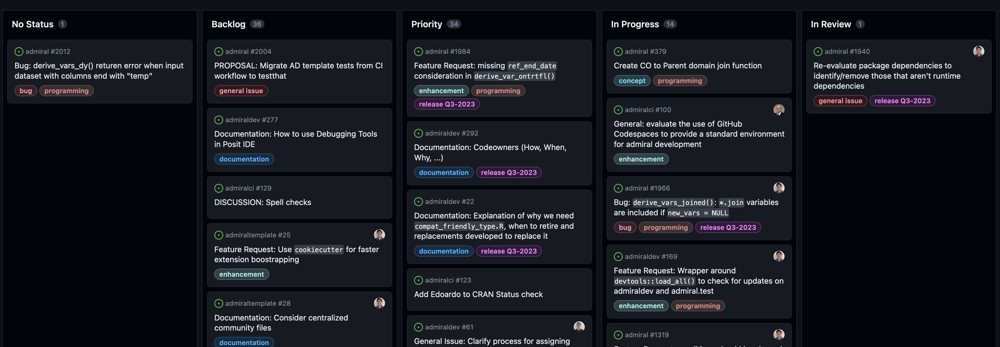

Cross Industry Package Development
A Newcomer’s Perspective
Stefan Thoma
2023-07-21
Context
Shift to open source solutions, particularly R
End-to-end solution is required
Cross-industry development
Project

- Part of the clinical reporting solution under Pharmaverse
admiralcovers the creation of ADaM data
Strategies
Approach [1]
- Act quickly:
- Communicate early
- Open source early
- Focus on developing for general use
- Get other companies & community involved
Approach [2]
- Permissive and jointly owned license
- Admiral won’t stop if one company exits
- Monetisation of code not possible
- Responsibility for maintenance
- Package is never “done”
Design
- One
corepackage- Plus package for therapeutic area.
admiralonco,admiralvaccine,admiralophtha- Plus internal company package
- Plus working groups
- Consistent interface and design across all packages
- Ensured via developers guide and CICD
- Overlap of developers between packages
- Modularity + templates for most more complex tasks
Design
Development workflow [1]
- GitHub repository is the centerpiece
- Every request / fix / improvement starts as an issue
- Weekly stand-up meetings
- Check-in on progress
- Discuss priorities for current release
- Product lead (Roche) & technical lead (GSK)
- Assign issues from the backlog
- Strategy discussions
- Quarterly releases
Development workflow [2]
Project board
Impact
For Roche
- 10 Devs for the price of 3
- Seat at the table - shape the product
- No total development control
- Use of R attracts diverse talent
Workplace [1]
Broader definition of a statistical programmer
Shared language between stats and statistical programmers
Open source development means transparency
- Work done on
admiral– recognition - Issues, errors and corrections
- Work done on
Workplace [2]
- Knowledge is more easily transferable to other companies
- Less hierarchies in dev team (different companies)
- Harder to get recognition, no manager present
- Autonomous work - everyone can chose which issues they want to work
- Expanding network across companies
- Leadership opportunities outside of the company
Conclusion
- Open source and cross industry collaboration when done well:
- Is more efficient
- Opens horizons
- Expands the job description of statistical programmers
- Makes for an attractive workplace (at least for me…)
Doing now what patients need next